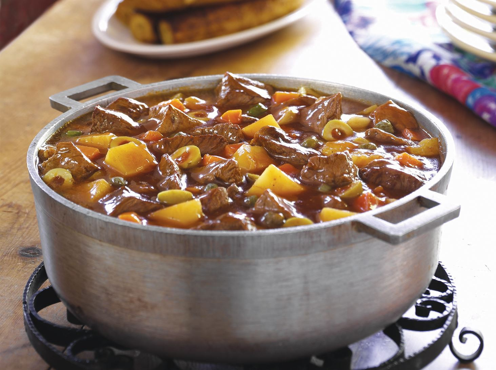

Home
Carne Guisada Recipe

Description
Carne Guisada is a mexican dish from blank that translates to "stewed meat." This dish is my favorite of any food
Ingredients
Steps
- Take your beef and season it
- Add beef to crockpot
- Add broth and other stuff
- Let it cook